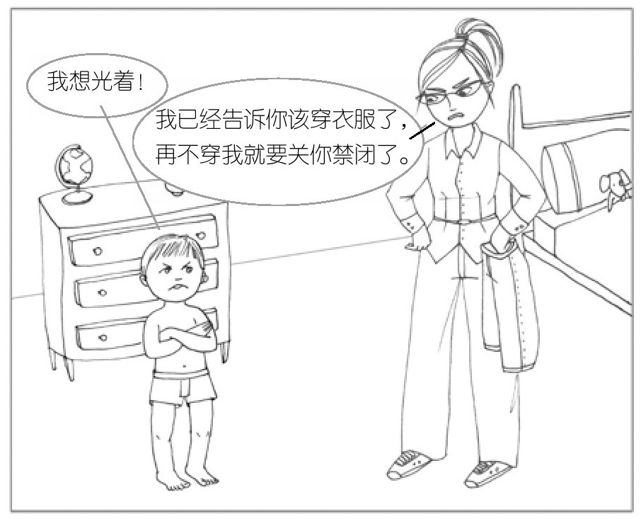

03 · 孩子发脾气的时候，别跟他的"楼下大脑"较劲
上一篇我们聊了左脑和右脑——一个是律师，一个是诗人。你学会了在孩子情绪崩溃的时候先联结再引导，顺序不能反。
这一章说一个更扎心的问题：为什么孩子明明能好好说话的时候，突然就"疯了"。
你上次在 Q2 里写到孩子把腿伸进米桶，你控制不住发了脾气。你说那是"刻在骨子里的应激反应"。西格尔在这一章里会给这种反应一个精确的解释——不只在孩子身上，也在你身上。
楼上大脑 vs 楼下大脑：两个完全不同的住户
西格尔把大脑纵向一分为二：
楼下大脑（Downstairs Brain）：脑干和边缘系统。它在脖子附近，负责本能反应——呼吸、眨眼、战斗或逃跑、强烈的情绪（愤怒、恐惧）。楼下大脑是天生的，从你一出生就在工作。
楼上大脑（Upstairs Brain）：前额叶皮层。它在前额后面，负责思考、计划、自控、共情、道德判断。楼上大脑不是天生的——它要花二十多年才建好。西格尔说得直接：25岁之前，楼上大脑都在施工。
这就解释了一切。
你儿子3岁不到。他的楼上大脑工地还只有脚手架。他能说几个字、能跟你互动——让你产生他能讲道理的错觉——但他的前额叶皮层根本还没建好。一旦楼下大脑被触发（想玩米、米被抢、觉得好玩的被打断了），楼下大脑直接接管全楼。楼上工地停工。他听不懂道理，不是不想听，是大脑没办法听。
这就是西格尔说的"翻盖子"（Flip Your Lid）：

楼下大脑就像一个锅盖，平时盖得牢牢的。情绪一来——盖子翻了。楼上大脑的连接断了。孩子活在纯粹的楼下大脑里：本能、情绪、反应。没有思考，没有自控，没有时间感。
你上次发脾气的时刻，也是盖子翻了
你在 Q2 里写的那个场景——孩子把腿伸进米桶，你"凶了他一下，瞪了他一眼"。你说这是"刻在骨子里的应激反应"。
西格尔会说：那一刻，你的盖子也翻了。
你看，楼下大脑的翻盖反应不是孩子的专利。成年人也翻。你看到米撒了一地——这个画面触发了你的楼下大脑（挨过饿、对粮食的敬畏、父亲的暴怒模式被激活）。你的楼上大脑（"我知道他不是故意的""他才3岁""米洗洗还能吃"）还没来得及说话，楼下大脑已经接管了。
这和意志力没关系。这是神经回路在那一刻短路了。西格尔管这叫"楼下大脑劫持"。
你在 Q3 里说：如果当时有人抱住你，说出"你是不是觉得他在浪费粮食"——你就会好受一点。这句话恰恰是在帮你把楼上大脑叫回来。命名的瞬间，前额叶重新上线。这就是上一篇我们说的"命名情绪能压制右脑"——同一个机制，从不同角度。
两种发脾气：楼上 vs 楼下
西格尔区分了两种完全不同的发脾气：
楼上发脾气——孩子是有策略的。他知道哭闹能得到什么。他哭的时候会偷偷看你的反应。他可以选择停下来。这种时候，你的策略是：永远不要和恐怖分子谈判。 你平静地告诉他：你这样我不会满足你。等你能好好说话了，我们再聊。
楼下发脾气——孩子是失控的。他的盖子翻了，楼上大脑完全离线。他根本不关心你怎么反应，因为他已经无法思考。你讲任何道理都是在跟一堵墙说话。
你的任务完全不同：先帮他盖上盖子。 不是讲道理——他听不到。不是放任——他需要你帮他冷静下来。是上一篇我们讲的"先联结"：抱紧他、用身体让他感到安全、用简单的词语命名他的感受。等他呼吸平稳了、身体不僵了——盖子盖回去了——再谈。
你上次抓头发抢蜡烛的场景，西格尔会说：那是楼下发脾气。他不是在跟你要蜡烛，他是被某种感觉淹没了。先联结是对的。你现在的设计——先抱住他、走到户外、试着说出他的感受——完全对症。
全脑教养第3法：动脑莫动气（Engage, Don't Enrage）
西格尔的方法直译过来就是"调动楼上，不要激怒楼下"。
当孩子发火的时候，你最容易犯的错误是——用楼下对楼下。他吼，你也吼。他失控，你也炸。两个盖子一起翻。你说你爸"放任叔叔伯伯羞辱我，没有护着我"——那是他爸的楼下大脑在说话。你在 Q2 里写道："作为一个父母，首先是要保护好孩子。"在楼上大脑的语言里，这叫整合——你有能力和孩子的情绪待在一起，而不被它卷走。
具体做法，西格尔给了三步：
第1步：别碰楼下。 不在孩子情绪爆发的时候惩罚、威胁、讲道理。这些都是对楼下大脑无效的输入——他接收不到。
第2步：调动楼上。 用问题把他的前额叶"请回来"。不是问他"你为什么要这样做"——这是指责。是问他"这件事你打算怎么解决？""你觉得还有什么别的办法？"这些问题需要思考才能回答——思考就自动激活了楼上大脑。
第3步：多练。 楼上大脑建成的唯一办法是反复使用。西格尔的比喻：楼上大脑就像肌肉，用得多就强，用得少就弱。每一次你让孩子自己做决定、自己想办法解决冲突、自己控制情绪——你都是在给他楼上大脑"上力量"。
练出来的自控，比管出来的服从更有用
西格尔讲了一个实验：研究人员让一群孩子做棉花糖测试。能等15分钟不吃棉花糖的孩子——楼上大脑（前额叶）更强。但重点不是他们天生更"自律"。重点是：自控是可以练的。
西格尔说，每一次你让孩子在自己的情绪风暴中暂停一下——哪怕只有几秒——他就在练习使用楼上大脑。你不用每次都成功。你只需要多提供这种机会。
你在 Q2 里反思你爸没有护着你——他的楼下大脑模式被你内化了。你说你现在面对孩子的时候"忍不住想发脾气"。但你在玩米事件的叙述里已经给出了答案：当有人帮你命名情绪（"你是不是觉得他在浪费粮食"），你就能平静下来。你需要的是一个人帮你把楼上大脑叫回来。
好消息是：你也可以做自己的那个人。当你下一次盖子快翻的时候，试试对自己说："我的楼下大脑正在被激活。"命名它。楼上的灯就会亮起来一点。
你儿子也是。你帮他的次数越多，他越早学会自己盖上盖子。
这篇的核心，三句话
- 楼上大脑管思考，楼下大脑管反应。 25岁之前，楼上大脑都在施工。孩子不是故意的，是大脑硬件还没到位。
- 两种发脾气不一样。 楼上发脾气是有策略的——不谈判。楼下发脾气是失控的——先联结，帮他盖上盖子。
- 动脑莫动气。 不在孩子情绪爆发时激怒他，而是用问题调动他的楼上大脑。每一次你让他自己想解决办法，你就在帮他"建楼"。
下一篇是全脑教养第4法：多角度叙事（Use the Remote of the Mind）。孩子对一件事的记忆可能是片面的、放大的、扭曲的——西格尔教你怎么像按遥控器一样帮他"倒带"和"快进"，重新编辑记忆。
学习反馈
在飞书中回复本条消息，填写你的答复。